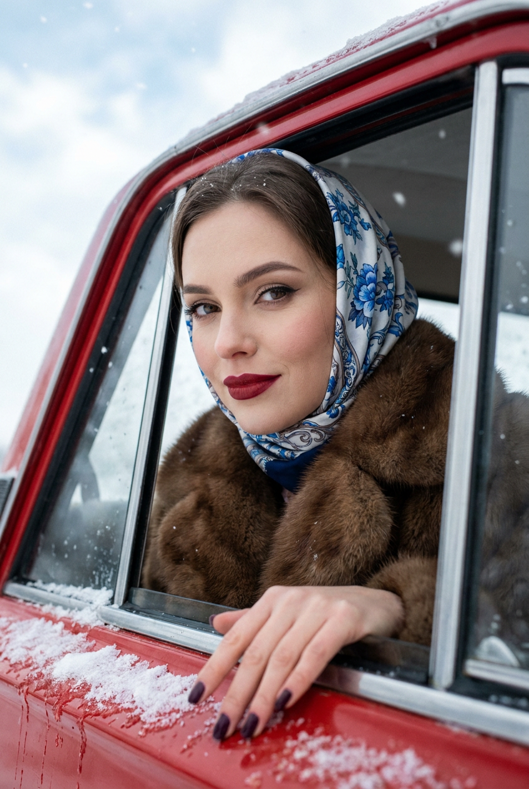
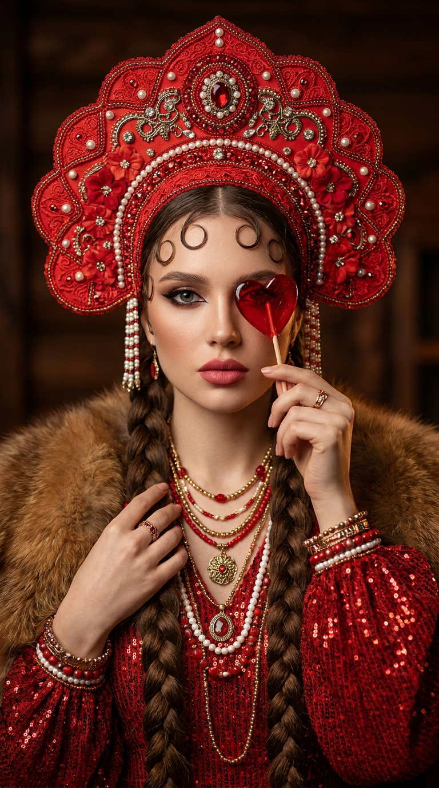
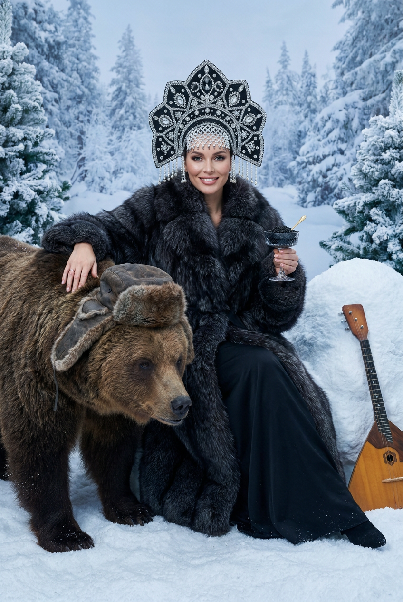
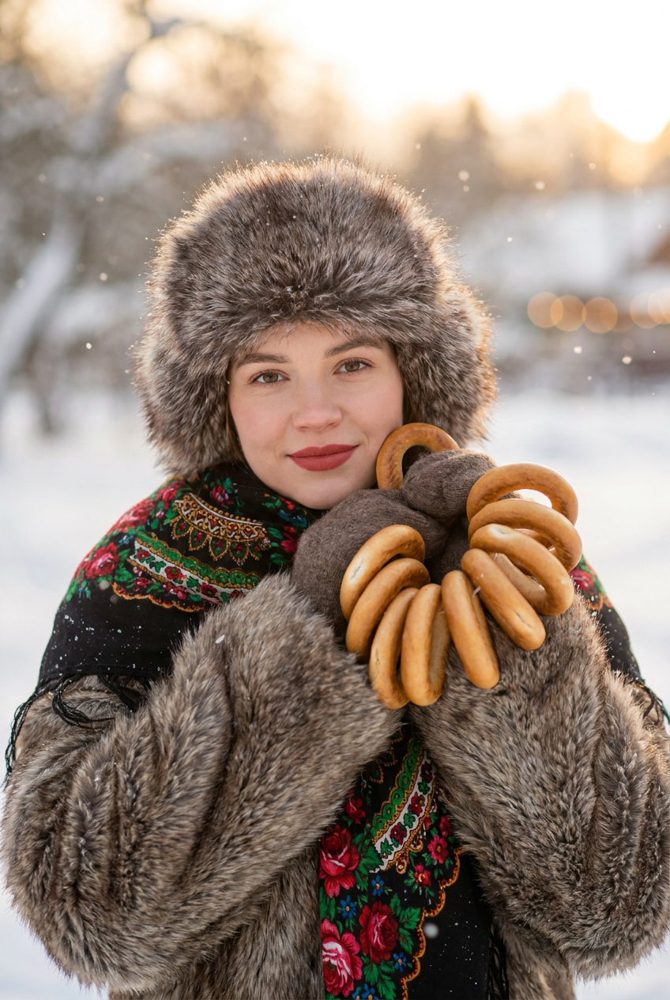
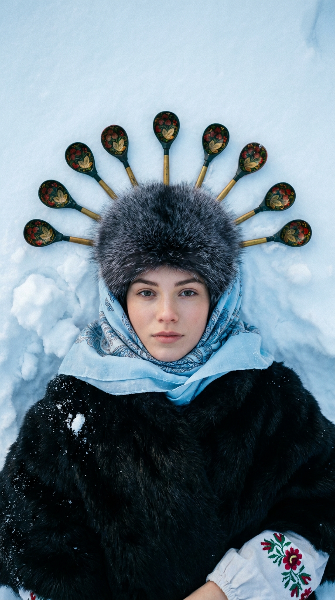
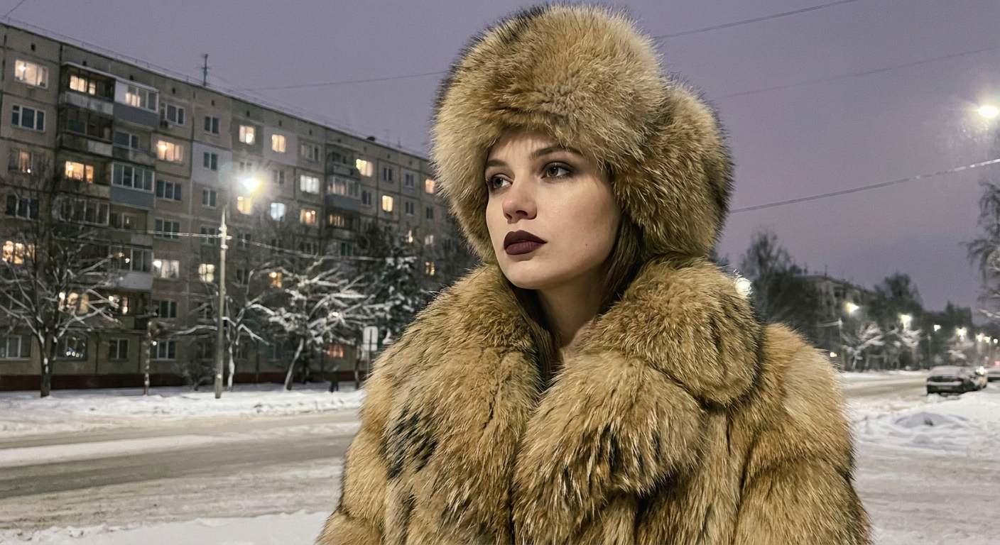
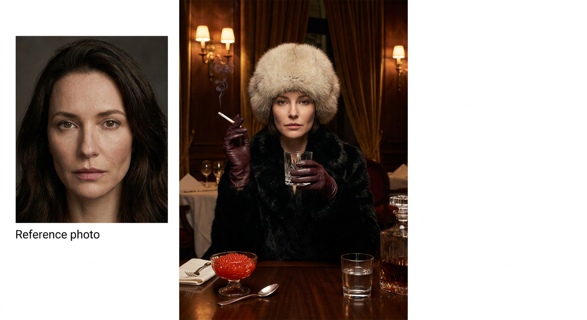
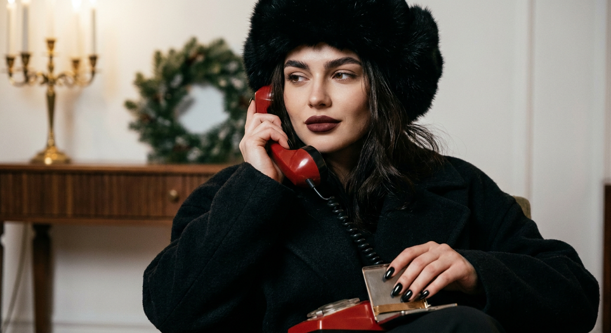
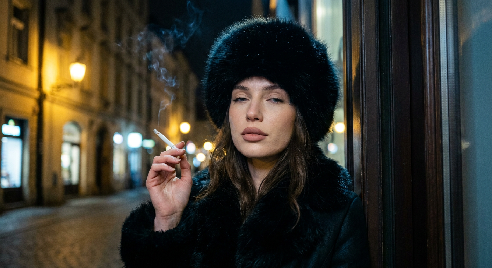
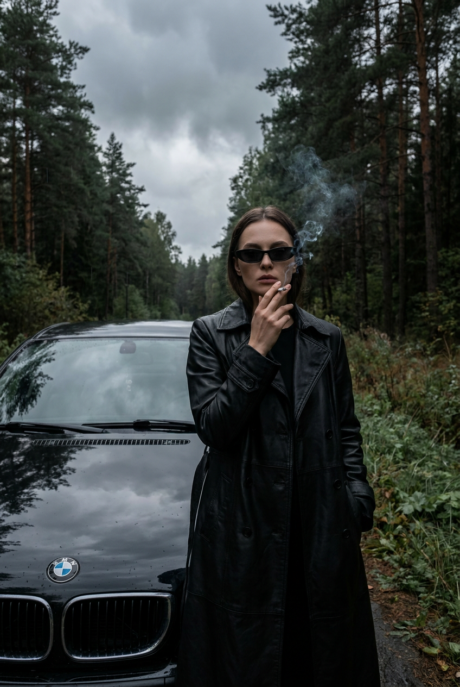

Slavic girl: 10 промптов для нейросети

Обычный портрет часто выглядит слишком гладким, случайные детали спорят между собой, а лицо теряет сходство с референсом. Генерация помогает собрать образ заранее: выбрать одежду, позу, свет и атмосферу, а затем быстро проверить несколько вариантов.
В подборке — 10 готовых сценариев в эстетике Slavic girl: от зимнего ретро-автомобиля и кокошника до панельного двора, ресторана, сигареты и чёрного BMW. Промпты можно использовать как основу и адаптировать под свой референс.
Как сгенерировать такое фото: пошагово
Нужен снимок анфас при ровном свете, лицо в кадре целиком, без тёмных очков и головных уборов. Разрешение от 1000 пикселей по короткой стороне. Чем чётче исходник, тем точнее модель повторит черты.
Выберите сценарий ниже и нажмите «Копировать» — текст уйдёт в буфер целиком, вместе с командой сохранения внешности. Эта команда стоит первой строкой и отвечает за то, чтобы на выходе было ваше лицо, а не случайное.
Кнопка «Сгенерировать» рядом с каждым промптом открывает модель в новой вкладке. Nano Banana Pro работает с референсом лица — в отличие от моделей, которые генерируют портрет с нуля и узнаваемость теряют.
Промпт — в поле ввода, портрет — через загрузку референса. Порядок значения не имеет, но без референса команда сохранения внешности работать не будет: модели нечего сохранять.
Для сторис и ленты берите 9:16, для превью и обложек — 4:3. Первый результат редко идеален: если поза или свет ушли не туда, поправьте соответствующую часть промпта и запустите заново. Обычно хватает двух-трёх итераций.
10 промптов для генерации
1. У окна ретро-автомобиля
Строго сохранить внешность по загруженному референсу: черты лица, пропорции, мимику и текстуру кожи без изменений. Фотореалистичный кинематографичный портрет девушки в зимнем салоне красного ретро-автомобиля. Она сидит у приоткрытого окна и слегка опирается рукой на край двери; пальцы находятся на переднем плане, на ногтях тёмный сливовый лак. Волосы частично убраны под шёлковую косынку с голубым цветочным или орнаментальным принтом. На плечах объёмная шуба либо пальто с густым коричневым мехом: хорошо видны отдельные волоски, микротени и натуральная фактура. Макияж аккуратный, с нейтральными тенями или стрелками, бордовыми губами и лёгким румянцем. Девушка смотрит прямо в объектив, выражение спокойное, уверенное, немного задумчивое. Холодный дневной свет, мягкие отражения на красном кузове, неглубокая резкость, объектив 85 мм, f/1.8, реалистичная кожа, высокая детализация, разрешение 8K.
2. Кокошник и леденец

Строго сохранить внешность по загруженному референсу: черты лица, пропорции, мимику и текстуру кожи без изменений. Роскошный фотореалистичный портрет по грудь в эстетике русской красавицы и fashion-editorial. Девушка стоит строго фронтально и смотрит в камеру; перед правой частью лица находится прозрачный красный леденец в форме сердца на палочке, частично закрывающий один глаз, второй глаз полностью открыт и очень выразителен, с влажным бликом. На ней две длинные толстые косы, гладкий центральный пробор, несколько тонких прядей уложены на лбу декоративными завитками. Главный акцент — большой сложный красный кокошник ручной работы с ажурным кружевом и богатым орнаментом. Кожа детализированная, но естественная, макияж с тёмными стрелками и подчёркнутыми бровями, губы матовые розово-красные. Настроение драматичное и соблазнительное. Студийный свет с мягким контровым сиянием, объектив 85 мм, f/2, резкость на видимом глазе, вертикальный кадр 4:5, 8K.
3. Зимняя сказка с медведем

Строго сохранить внешность по загруженному референсу: черты лица, пропорции, мимику и текстуру кожи без изменений. Постановочная luxury fashion-съёмка на снежной поверхности в духе русской зимней сказки и театральной этнической роскоши. Женщина сидит среди снега в расслабленной, царственной и немного игривой позе: корпус развёрнут к камере, одна нога красиво вытянута вперёд, вторая согнута. Одной рукой она мягко касается крупного медведя, другой держит изящный бокал с чёрной икрой и маленькой золотой ложечкой. Взгляд направлен в объектив, выражение тёплое, уверенное, слегка соблазнительное и ироничное. Лицо естественное, узнаваемое, без изменения пропорций и мимики. Вокруг — чистый снег, дорогие декоративные детали, ощущение журнальной постановки. Холодный рассеянный свет, лёгкий золотой акцент на бокале и ложке, объектив 50 мм, f/2.8, проработанная фактура снега и меха, кинематографичная цветокоррекция, вертикальный формат 4:5, 8K.
4. Баранки и народный платок

Строго сохранить внешность по загруженному референсу: черты лица, пропорции, мимику и текстуру кожи без изменений. Уютный фотореалистичный зимний портрет в стиле Slavic girl. Девушка смотрит в камеру со спокойной уверенной улыбкой; на губах яркая матовая красная помада, на щеках лёгкий румянец, глаза выразительные, макияж аккуратный и натуральный. На голове пушистая меховая шапка или капюшон коричнево-серого оттенка, на плечах тёплая меховая накидка. У шеи видны элементы народного костюма. Девушка подносит к лицу сдобную баранку, а в другой руке держит целую вязанку баранок; обе ладони попадают в кадр, одна баранка расположена прямо перед лицом. На шее или плечах — славянский платок, пояс либо шарф с богатой вышивкой в красных, зелёных, бордовых и белых тонах, с растительными орнаментами. Мягкий зимний свет, уютный праздничный настрой, объектив 50 мм, f/2.2, естественная кожа, высокая детализация, вертикальный кадр 4:5.
5. Ореол из расписных ложек

Строго сохранить внешность по загруженному референсу: черты лица, пропорции, мимику и текстуру кожи без изменений. Съёмка сверху: девушка лежит на чистом зимнем снегу, лицо занимает центральную часть кадра, взгляд направлен прямо в объектив, мимика спокойная и уверенная. Вокруг головы выложен круг из деревянных ложек, похожий на декоративный ореол. Ручки ложек украшены цветочными и народными узорами: тёмно-зелёный или чёрный фон, красные и золотистые элементы. На голове объёмная меховая шапка тёмно-серого цвета с хорошо различимым ворсом. Одежда тёмная, зимняя, без лишних деталей, чтобы внимание оставалось на лице и композиции. Макияж холодный и аккуратный, губы матовые тёмно-красные или бордовые, кожа реалистичная, без пластиковой ретуши. Снег создаёт сказочную атмосферу, но светотень остаётся натуральной. Верхний мягкий свет, объектив 35 мм, f/4, симметричная композиция, высокая детализация дерева, меха и снежинок, вертикальный формат 4:5, 8K.
6. Ночная панелька и мех

Строго сохранить внешность по загруженному референсу: черты лица, пропорции, мимику и текстуру кожи без изменений. Фотореалистичный портрет славянской девушки на фоне зимнего ночного города. Она показана в ракурсе три четверти, слегка приподняла голову и смотрит в сторону от камеры; выражение задумчивое, загадочное и чувственное. На ней роскошная натуральная меховая шуба и большая пушистая шапка в тон. Мех песочно-коричневый, с тёмными кончиками, объёмный, мягкий, с тщательно прорисованными волосками. Макияж с лёгким smoky eyes подчёркивает выразительные тёмные глаза, губы покрыты насыщенной матовой помадой тёмно-коричневого или бордового оттенка. На заднем плане — советская панельная многоэтажка с тёпло горящими окнами, снег, холодный воздух и приглушённые городские огни. Контрастный свет от фонаря и мягкий холодный контровик, объектив 85 мм, f/1.8, малая глубина резкости, кинематографичная цветокоррекция, вертикальный кадр 4:5.
7. Тёмный ресторанный портрет

Строго сохранить внешность по загруженному референсу: черты лица, пропорции, мимику и текстуру кожи без изменений. Фотореалистичная luxury editorial-съёмка в дорогом старом ресторане или приватном клубе. Женщина сидит за массивным деревянным столом и смотрит прямо в камеру; поза спокойная, уверенная, немного холодная и отстранённая, выражение собранное и загадочное. На ней длинная чёрная шуба или роскошное меховое пальто из густого тёмного меха. Интерьер камерный: стены отделаны тёмным деревом, на них горят классические бра, по бокам висят тяжёлые бархатные шторы. Тёплый локальный свет подчёркивает лицо, мех и фактуру стола, фон уходит в глубокие мягкие тени. Сохранить естественные пропорции лица, узнаваемость и живую мимику, без эффекта пластиковой кожи. Композиция по грудь, объектив 50 мм, f/2, мягкий боковой свет, глубокие коричнево-чёрные оттенки, редакционная цветокоррекция, вертикальное разрешение 8K.
8. Бордовый макияж на диване

Строго сохранить внешность по загруженному референсу: черты лица, пропорции, мимику и текстуру кожи без изменений. Кинематографичный портрет девушки, сидящей и расслабленно откидывающейся на диване. Она слегка поворачивает лицо в сторону, взгляд полуприкрытый, мимика уверенная и спокойная. На ней тёмная зимняя одежда: чёрная меховая шапка или шляпка из пушистого ворса и объёмное пальто либо меховой жакет с реалистичной фактурой ткани. Волосы аккуратно уложены, у корней заметен лёгкий блеск. Вечерний макияж выразительный: тёмный smoky eyes, подчёркнутые ресницы, чёткая форма бровей, плотная матовая помада сливового или тёмно-бордового оттенка. В кадре видны руки с глянцевым чёрным или графитовым маникюром. Полутёмный интерьер, мягкий направленный свет, глубокие тени и ощущение дорогой editorial-съёмки. Объектив 85 мм, f/1.8, резкость на глазах, вертикальный формат 4:5, реалистичная кожа, 8K.
9. Сигарета в зимнем городе

Строго сохранить внешность по загруженному референсу: черты лица, пропорции, мимику и текстуру кожи без изменений. Фотореалистичный кинематографичный портрет на улице зимой. Девушка держит сигарету в левой руке, поднятой к лицу; тонкая струйка дыма растворяется в холодном воздухе. Она смотрит в сторону камеры полуприкрытым взглядом, выражение спокойное, немного задумчивое. На голове объёмный чёрный головной убор с пушистым мехом, на плечах тёмное пальто или куртка с плотной тканью и меховой отделкой. Хорошо видны слои одежды, рельеф ткани и ремешок коричневой или тёмно-коричневой сумки без логотипов. Макияж дневной, с акцентом на глаза, губы матовые нюдово-розовые. Фон слегка размытый, с холодными зимними оттенками и мягкими огнями улицы. Мех должен выглядеть натурально, кожа — живой и детализированной. Объектив 50 мм, f/1.8, выдержка 1/250, мягкий боковой дневной свет, атмосферный дым, вертикальный кадр 4:5, 8K.
10. Чёрный BMW у леса

Строго сохранить внешность по загруженному референсу: черты лица, пропорции, мимику и текстуру кожи без изменений. Мрачная фотореалистичная cinematic fashion-фотография в дорогой editorial-эстетике. Женщина стоит рядом с чёрным классическим седаном BMW в полный рост или по пояс в трёхчетвертном кадре. Она находится перед капотом, слегка опирается на автомобиль или стоит вплотную к нему, поза дерзкая, уверенная и независимая. Глянцевый кузов чистый, отражает тусклое небо, на передней части отчётливо видна эмблема BMW. Локация — узкая дорога или лесная поляна, вокруг приглушённый холодный свет и тёмные деревья. На женщине длинный чёрный плащ-тренч из кожи или кожзама с матовой либо умеренно глянцевой поверхностью; силуэт строгий, тяжёлый и собранный. Лицо естественное, узнаваемое, без изменения пропорций. Пасмурное небо, мягкий контровик, отражения на капоте, объектив 35 мм, f/2.8, вертикальный кадр 4:5, кинематографичная цветокоррекция, 8K.
Что важно учесть в этом стиле
Эстетика Slavic girl держится на контрасте: холодный снег и тёплая кожа, тяжёлый мех и аккуратный макияж, народный орнамент и дорогая fashion-подача. Одного слова «славянский» мало — лучше отдельно описывать головной убор, материал, оттенки, позу и источник света.
Для сходства с референсом указывайте естественную текстуру кожи, сохранение пропорций лица и конкретный план съёмки. Портрету подойдут 50–85 мм, для сцены с автомобилем или композицией сверху — 35 мм. Если генератор поддерживает параметры, начинайте с вертикального формата 4:5 и проверяйте 4–8 вариантов.
Идеи для вариаций
- Замените красный ретро-автомобиль на старый автобус, заснеженную остановку или деревянные сани.
- Сделайте кокошник белым, бордовым или чёрным, сохранив красный леденец как единственный яркий акцент.
- Добавьте к зимней сказке самовар, вышитую скатерть или следы саней на снегу.
- Перенесите портрет с ложками на тёмный деревянный стол и снимите сцену под углом 45 градусов.
- Для городской версии используйте двор с гаражами, неоновую вывеску или свет из подъезда.
- Вместо сигареты добавьте чашку кофе, спичечный коробок без надписей или тонкие кожаные перчатки.
Как собрать свой промпт
Сначала задайте тип кадра и композицию: крупный портрет, по грудь, полный рост или съёмка сверху. Затем опишите лицо и эмоцию, после этого — одежду, головной убор, руки и главный предмет в сцене. Такой порядок помогает модели не потерять ключевой объект.
В конце добавьте свет, объектив, диафрагму, фон и качество. Например: «объектив 85 мм, f/1.8, мягкий боковой свет, малая глубина резкости, вертикальный формат 4:5, реалистичная кожа, 8K». Для сложного образа лучше сделать 6–8 генераций, выбрать удачную композицию и только потом менять цвет помады или детали одежды.
Ошибки, из-за которых кадр не получается
- Слишком много главных объектов. Если одновременно просить медведя, машину, кокошник и сложный интерьер, модель может упростить лицо или потерять позу.
- Размытые указания по рукам. Для сигареты, бокала, баранки и ложек отдельно описывайте положение пальцев и предмета в кадре.
- Несовместимый свет. Не смешивайте яркое полуденное солнце с ночными окнами и мягкой студийной схемой.
- Чрезмерная ретушь. Формулировки вроде «идеальная фарфоровая кожа» часто убирают естественную текстуру и сходство с референсом.
- Нет ограничений по композиции. Указывайте план, ракурс, соотношение сторон и объектив, иначе головной убор или руки могут оказаться за пределами кадра.
Частые вопросы
Как сделать такое ИИ-фото бесплатно?
Для первых попыток подойдут Kandinsky и Шедеврум: они позволяют создавать изображения без оплаты, но могут ограничивать число генераций, разрешение или работу с референсом. В Krea AI и Arena.ai доступны бесплатные режимы, однако лимиты и набор функций меняются. Сложные сцены с точным сходством лица не всегда получаются с первого раза, поэтому рассчитывайте на несколько вариантов и проверяйте правила загрузки фотографий.
Как сохранить сходство с лицом на фото?
Загрузите чёткий референс без сильных фильтров и опишите, что нужно сохранить: форму глаз, носа, губ, овал, скулы и естественную мимику. Не перегружайте первый запрос радикальной сменой возраста, макияжа и ракурса одновременно. После выбора удачного кадра меняйте только одежду или фон.
Почему нейросеть искажает руки и предметы?
Кисти, пальцы, ложки, бокалы и сигареты требуют точного пространственного описания. Укажите, какая рука держит предмет, где он находится относительно лица и сколько пальцев видно. Если ошибка повторяется, упростите сцену, сгенерируйте базовый портрет, а детали добавьте на этапе редактирования.
Какие параметры выбрать для портрета Slavic girl?
Для лица обычно хорошо работают объективы 50–85 мм, диафрагма f/1.8–2.8 и вертикальный формат 4:5. Для сцены сверху с ложками подойдёт 35 мм и f/4, чтобы в резкости осталась композиция вокруг головы. Запрашивайте высокое разрешение, но сначала отберите удачный вариант на черновом качестве.